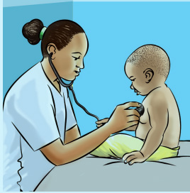

Science is used to explain how things work in the real world; for example, rain formation, occurrence of earthquake and thunderstorm. Science helps to make tools and machines that are used to simplify work or solve problems in our daily life. Figure 1 shows people using scientific tools, including a spring balance and a stethoscope.
(a)

(b)
Figure 1: Using
scientific tools